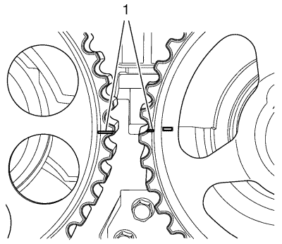

Montaje de la correa de distribución
Herramientas especiales
| • | EN 852 Herramienta de bloqueo |
| • | EN 42492 Herramienta de montaje de la correa de distribución |
Si desea informarse sobre herramientas regionales equivalentes, consultar
Herramientas especiales : 1.6L LXT .
- La marca del piñón del cigüeñal y la marca de la tapa trasera deben estar alineadas (1, 2).

- Las marcas del piñón del árbol de levas deben estar alineadas (1).
- La herramienta de bloqueo EN 852 debe montarse entre los piñones del árbol de levas.
- Monte la correa de distribución.
- Gire la bomba de agua en sentido antihorario con la herramienta de montaje EN 42492.
Nota: Utilice un espejo.
- Gire la bomba de agua en sentido horario hasta que la aguja del brazo de ajuste del tensor automático de la correa de distribución (3) quede alineada con la ranura (2) del soporte del tensor automático de la correa de distribución.
Precaución:Consulte Precaución con las fijaciones en la sección Prólogo.
- Apriete los tornillos de la bomba de agua a 10 N·m (89 lib. pulg.).
- Retire la herramienta de montaje EN 42492 y la herramienta de bloqueo EN 852.
- Gire el motor en el sentido de rotación hasta que dé una vuelta completa.
- Compruebe la posición de los engranajes del árbol de levas, del cigüeñal y la tensión.
- La marca del piñón del cigüeñal y la marca de la tapa trasera deben estar alineadas (1, 2).
- Las marcas del engranaje del árbol de levas deben estar alineadas (1).
- La herramienta de bloqueo EN 852 debe montarse entre los engranajes del árbol de levas.
| © Copyright Chevrolet. Reservados todos los derechos |